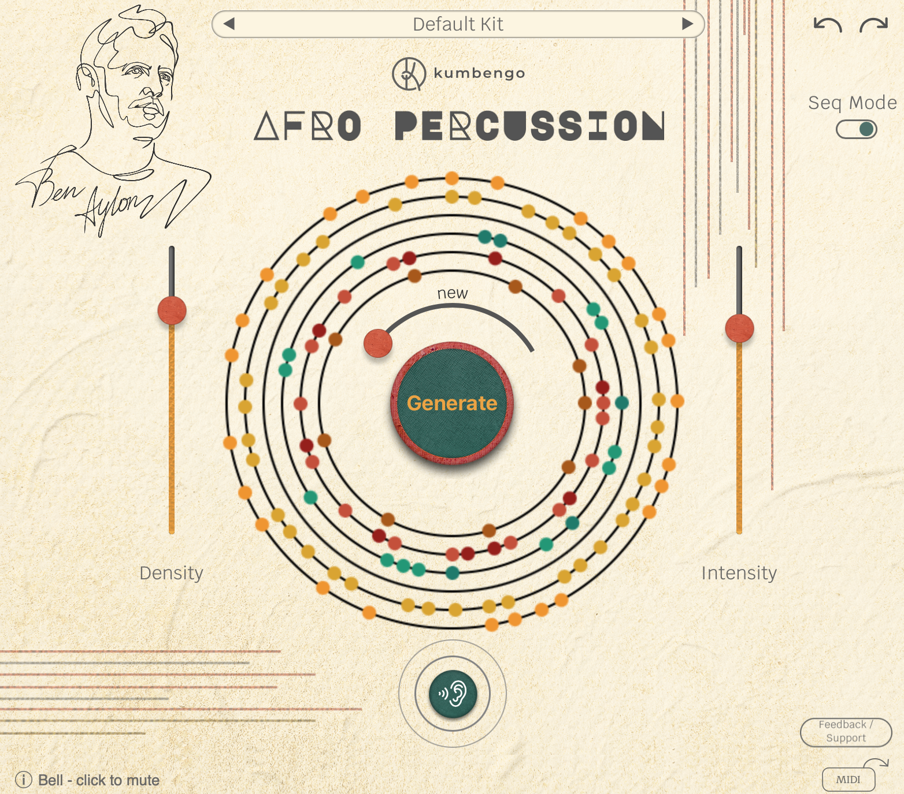

Your browser does not support the video tag.

Your browser does not support the video tag.
Your browser does not support the video tag.
Your browser does not support the video tag.
Your browser does not support the video tag.
‹
›
Screenshot
Application screenshot showcase
Listen
Listen
Feed it any track from your project — it generates a rhythm that fits perfectly
Shape
Shape
Shape a groove that matches your feel using Similarity, Density, and Intensity sliders
Edit
Edit
Drag MIDI into your DAW to tweak deeply, arrange freely, and trigger your own sounds
Feel
Feel
Unquantized, human feel patterns — raw, organic, and alive